Préparation partiel
Plusieurs difficultés possibles en fonction de votre état d’avancement
1 Ouverture et lecture de fichiers
Ces exercices permettent de vous familiariser avec différents types d’interface.
Votre objectif restent de filtrer au maximum les données et de télécharger un .csv pour l’ouvrir directement sous R.
Évitez de passer par un tableur…
1.1 Logements vacants
Attention il faut faire :
Pour avoir accès à la plateforme de la donnée. On retrouve alors la même interface que pour les statistiques locales de l’Insee vue pour le DM.
logvac <- read.csv2("data/LOGVAC.csv", skip = 3)
# séparateur ";" et 2 lignes de titre
summary(logvac)## Code Libellé Nombre.de.logements.vacants.2022
## Min. :75056 Length:1266 Min. : 0
## 1st Qu.:77330 Class :character 1st Qu.: 15
## Median :78332 Mode :character Median : 41
## Mean :83784 Mean : 341
## 3rd Qu.:91661 3rd Qu.: 184
## Max. :95690 Max. :1369571.2 Eurostat
Passer par
## DATAFLOW LAST.UPDATE freq unit
## Length:40 Length:40 Length:40 Length:40
## Class :character Class :character Class :character Class :character
## Mode :character Mode :character Mode :character Mode :character
##
##
##
## coicop geo TIME_PERIOD OBS_VALUE
## Length:40 Length:40 Min. :2024 Min. : 0.900
## Class :character Class :character 1st Qu.:2024 1st Qu.: 2.000
## Mode :character Mode :character Median :2024 Median : 2.600
## Mean :2024 Mean : 4.105
## 3rd Qu.:2024 3rd Qu.: 3.625
## Max. :2024 Max. :58.500
## OBS_FLAG CONF_STATUS
## Length:40 Mode:logical
## Class :character NA's:40
## Mode :character
##
##
## ## geo OBS_VALUE
## 1 Albanie 2.6
## 2 Autriche 2.9
## 3 Belgique 4.3
## 4 Bulgarie 2.6
## 5 Suisse 1.1
## 6 Chypre 2.31.3 Valeurs foncières data.gouv
Passer par
dvf <- read.csv("data/gros/dvf.csv", dec = ".")
dvf <- dvf [dvf$nom_commune == 'Bondy', c("id_parcelle","valeur_fonciere")]
summary(dvf)## id_parcelle valeur_fonciere
## Length:17715 Length:17715
## Class :character Class :character
## Mode :character Mode :character# on filtre sur la commune et comme colonne l'identifiant parcelle et la valeur foncière
# on force le champs valeur foncière en numérique ce qui crée des NA que l'on supprime
dvf$valeur_fonciere <- as.numeric(dvf$valeur_fonciere)
dvf <- na.omit(dvf)5 lignes supprimées sur 1266 = c’est minime
1.4 Origine et taille de chacune des données.
Dans chacun des 3 cas, il s’agit de sources fiables.
La taille des dvf est beaucoup plus importante que les 2 autres sources (problème de téléchargement possible en salle de cours)
| donnée | origine | taille |
|---|---|---|
| logement vacant | Observatoire des territoires (ANCT, Etablissement Public) | 39 communes du 93 |
| Inflation 2024 | Eurostat (site officiel des stats pour l’Europe) | 40 pays européens + totaux divers |
| demandes de valeurs foncières (dvf) | Ministère de l’Économie, des Finances et de l’Industrie (disponible sur data.gouv) | 268 556 transactions immobilières sur le 93 |
2 Univarié
2.1 Logements vacants
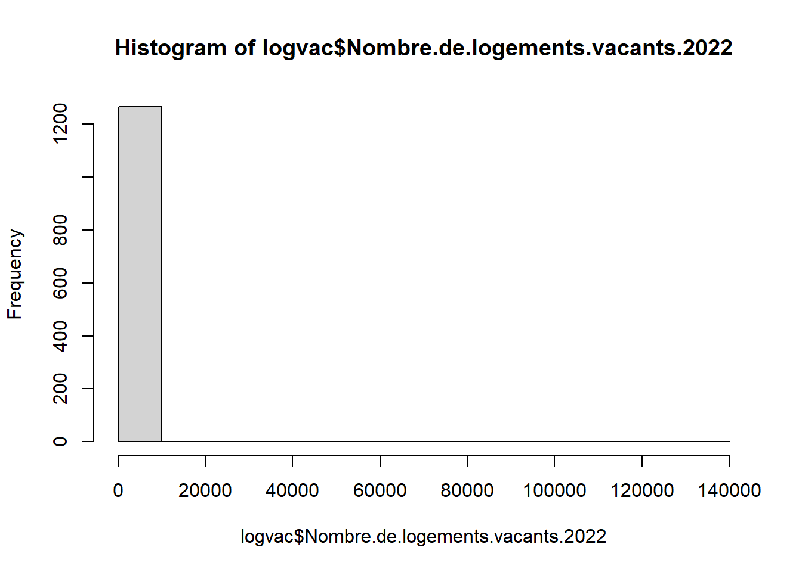
## Code Libellé Nombre.de.logements.vacants.2022
## 1 75056 Paris 136957
## 966 92012 Boulogne-Billancourt 4545
## 974 92026 Courbevoie 4395
## 1028 93066 Saint-Denis 4236
## 963 92004 Asnières-sur-Seine 4038
## 755 78646 Versailles 3567# Exclure Paris
logvac <- logvac [logvac$Code != 75056,]
# avec un peu de mise en forme
hist(logvac$Nombre.de.logements.vacants.2022/1000, main = "Répartition du nb de logements vacants\nIle de France", xlab = "Montants (milliers de logements)", ylab = "Nb de communes du 93", border = NA, col = "cadetblue")
# affichage médiane / moyenne
abline(v=mean(logvac$Nombre.de.logements.vacants.2022, na.rm = T)/1000, col="red")
abline (v=median(logvac$Nombre.de.logements.vacants.2022, na.rm = T)/1000, col="blue")
2.2 Inflation
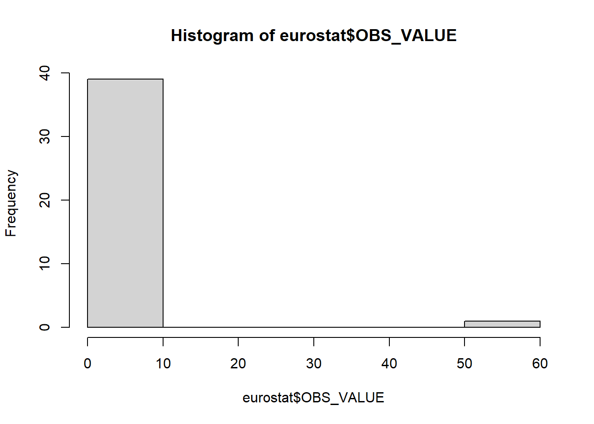
## geo OBS_VALUE
## Length:40 Min. : 0.900
## Class :character 1st Qu.: 2.000
## Mode :character Median : 2.600
## Mean : 4.105
## 3rd Qu.: 3.625
## Max. :58.500## geo OBS_VALUE
## 38 Turquie 58.5
## 33 Roumanie 5.8
## 34 Serbie 4.8
## 21 Islande 4.5
## 3 Belgique 4.3
## 27 Macédoine du Nord 4.2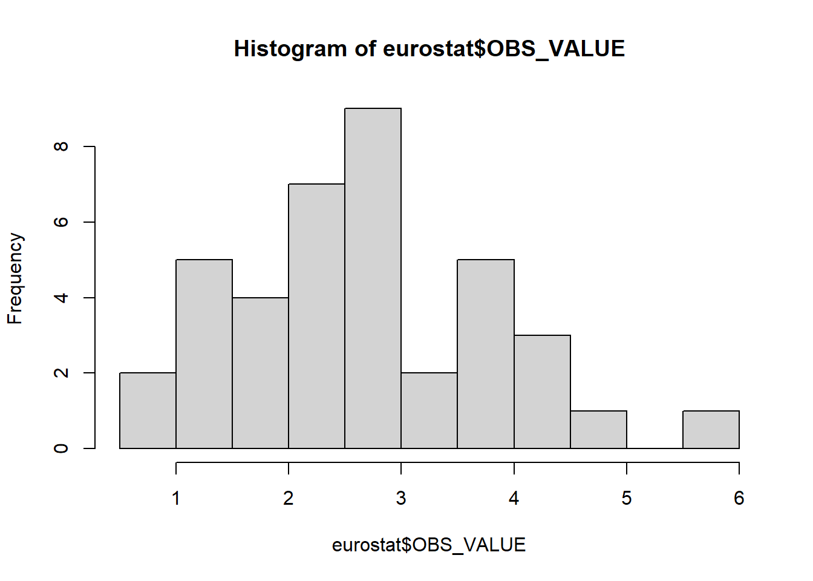
# avec un peu de mise en forme
hist(eurostat$OBS_VALUE, main = "Répartition des taux d'inflation 2024\nEurope", xlab = "Tx de variation moyen sur 2024 (%)", ylab = "Nb de pays européens", border = NA, col = "wheat")
# affichage médiane / moyenne
abline(v=mean(eurostat$OBS_VALUE), col="red")
abline (v=median(eurostat$OBS_VALUE), col="blue")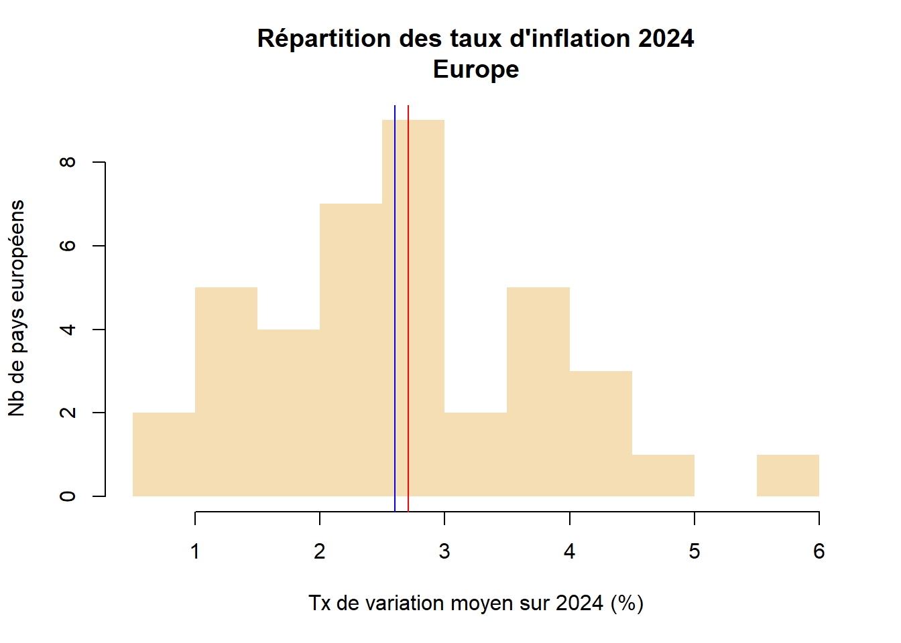
2.3 Valeurs foncières
## Min. 1st Qu. Median Mean 3rd Qu. Max.
## 0 210 19747 50228 103038 103038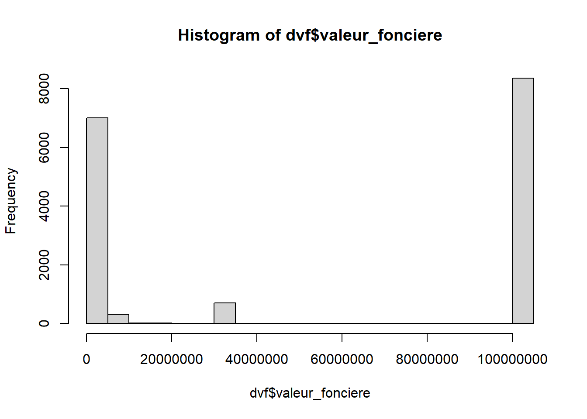
hist(dvf$valeur_fonciere/1000, main = "Répartition du montant des transactions immobilières\nBondy", xlab = "Montant", ylab = "Nb de transactions", border = NA, col = "wheat")
# affichage médiane / moyenne
abline(v=mean(dvf$valeur_fonciere/1000), col="red")
abline (v=median(dvf$valeur_fonciere/1000), col="blue")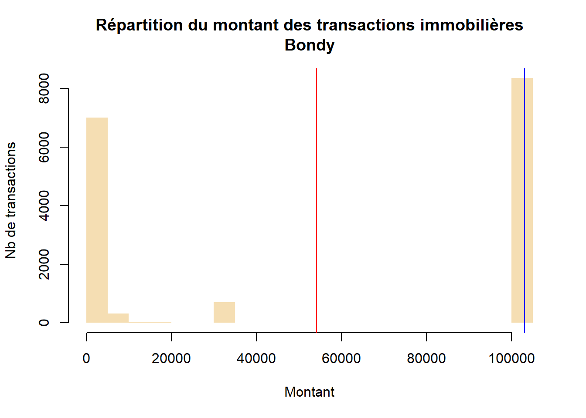
2.4 Courte analyse
| thème | analyse | valeur.aberrante |
|---|---|---|
| logement vacant | Beaucoup de communes ont peu de logements vacants dans le 93, mais il faudrait rapporter à la taille des communes pour avoir une idée plus juste. | St Denis semble avoir beaucoup de logements, en tous cas plus que Montreuil qui est de taille comparable. |
| inflation | Les pays ont des profils très différents, on distingue un groupe à faible inflation et un autre groupe à plus forte inflation. | Turquie, on retire, la valeur est trop différente de la moyenne des autres. |
| dvf | Beaucoup de petites transactions (- de 10 000 euros) et de très grosses transactions (ordre de grandeur au million d’euros) | non |
3 Bivariée
3.1 Khi2 : logements vacants par dpt
3.1.0.1 Tableau de contingence
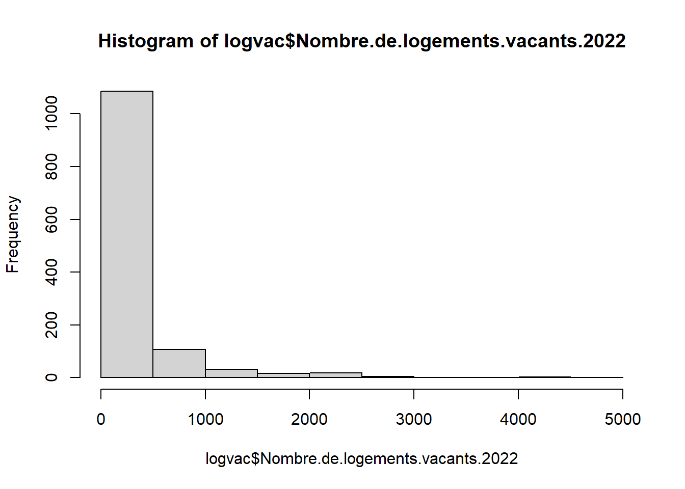
logvac$categorie <- cut(logvac$Nombre.de.logements.vacants.2022, breaks = c(0,500,750,5000))
table(logvac$categorie)##
## (0,500] (500,750] (750,5e+03]
## 1080 64 116##
## (0,500] (500,750] (750,5e+03]
## 77 487 12 7
## 78 229 14 14
## 91 169 10 14
## 92 5 5 26
## 93 8 5 26
## 94 19 9 19
## 95 163 9 103.1.0.2 Khi2
Pas de chiffre < 5, on peut faire un khi2
##
## Pearson's Chi-squared test
##
## data: tab
## X-squared = 481.35, df = 12, p-value < 0.00000000000000022La p-value est réduite donc l’hypothèse nulle est rejetée, il y a bien un lien entre les dpts et le nombre de logements vacants en Ile de France.
Il paraît d’ailleurs évident au vu du tableau de contingence qu’il y a moins de logements vacants dans le 77 78, 91 et 95 que dans le 92,93,94.
Mais, encore une fois, le nombre de logements vacants doit être dépendant de la taille des villes.
3.2 Régression : tx d’inflation et chomage (milliers de personnes)
3.2.1 Constitution de la base : inflation et chômage
chomage <- read.csv("data/chomage.csv")
chomage <- chomage [, c("geo","OBS_VALUE")]
jointure <- merge (eurostat, chomage, by = "geo")
names(jointure) <- c("pays", "inflation", "chomage")
hist(jointure$chomage)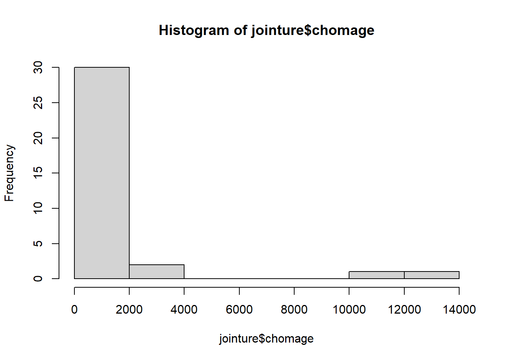
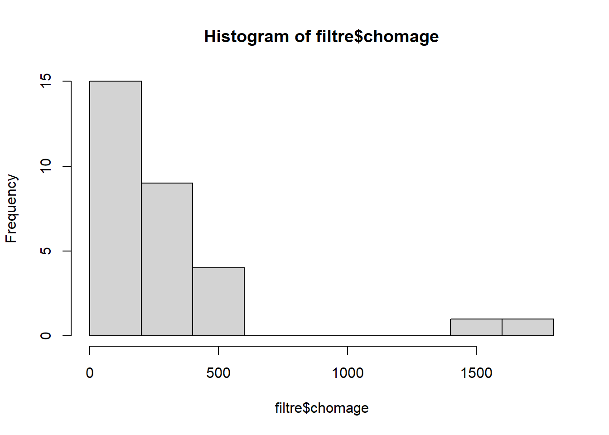
On a effectué un double filtre de manière à avoir une donnée de taille comparable.
3.2.2 Modèle
lm <- lm(filtre$chomage~filtre$inflation)
plot(filtre$inflation, filtre$chomage, xlab="variable explicative\ninflation", ylab= "à expliquer : chômage")
abline(lm, lty =2, lwd = 1, col = "red")
text(filtre$inflation, filtre$chomage,labels = filtre$pays
, cex=0.6, pos = 2)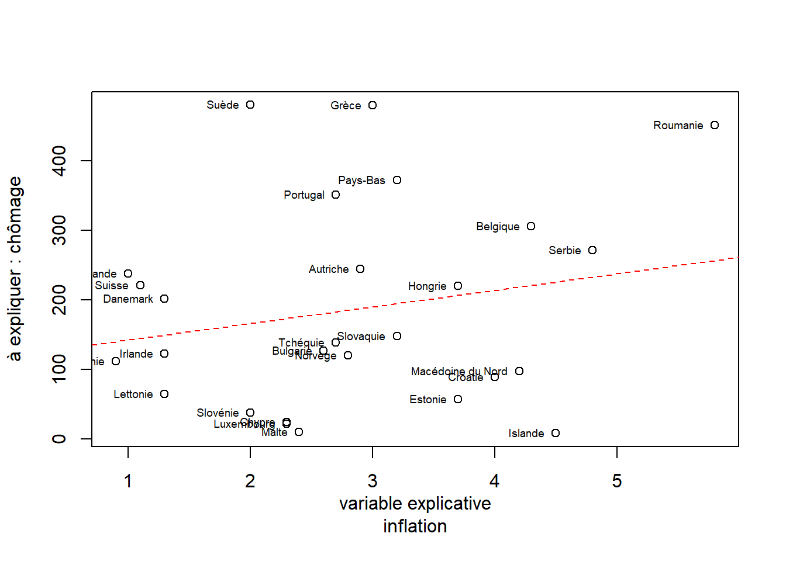
## inflation chomage
## inflation 1.0000000 0.2091469
## chomage 0.2091469 1.0000000Il apparaît qu’il n’y a pas de relation entre tx d’inflation et chomage. Le filtre a sélectionné des pays de taille comparable mais leur position est trop dispersée. Apparaît cependant des groupes qui pourraient éventuellement permettre d’établir une division spatiale des pays européens.
3.3 Variance : logements vacants par dpt
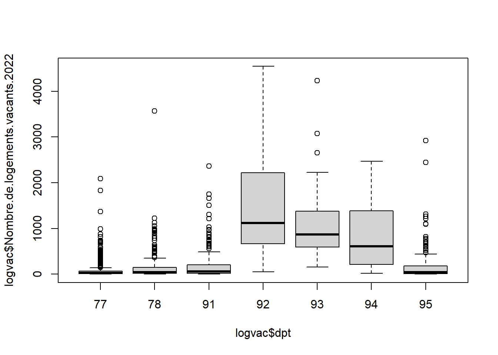
## Analysis of Variance Table
##
## Response: nb
## Df Sum Sq Mean Sq F value Pr(>F)
## dpt 6 123269791 20544965 135.9 < 0.00000000000000022 ***
## Residuals 1258 190183251 151179
## ---
## Signif. codes: 0 '***' 0.001 '**' 0.01 '*' 0.05 '.' 0.1 ' ' 1Comme le montre le résultat de l’ANOVA, il y a une forte différenciation entre les départements d’île de France autour des logements vacants.
4 ACP : déplacements domicile travail
4.1 Travail préparatoire sur le fichier avant l’ACP : le fichier est trop gros
Préparation du fichier final, on filtre sur les dpts utilisés en cours
# très gros fichier, on filtre sur les dpts
dep <- read.csv2("data/gros/depl_dom_trav_co2_2022.csv", na.strings = "NA")
lieu <- c(lieu, "06088")
filtre <- dep [dep$LIEU_RESID %in% lieu,]
write.csv(filtre,"data/gros/deplacement.csv", fileEncoding = "UTF-8" )On coupe le fichier par dpt pour que les étudiants puissent l’ouvrir
4.2 Au choix on traite d’un département
On fait le choix des numériques DIST_HEBDO CO2_HEBDO DUREE CARBU_HEBDO avec l’idée que toutes les valeurs sont corrélées
dep <- dep [, c("DIST_HEBDO", "CO2_HEBDO", "DUREE", "CARBU_HEBDO")]
dep <- na.omit(dep)
# attention bcp de na on passe de 50 M à 16 M## DIST_HEBDO CO2_HEBDO DUREE CARBU_HEBDO
## Min. : 5.482 Min. : 644.3 Min. : 1.803 Min. : 0.2673
## 1st Qu.: 30.630 1st Qu.: 4662.9 1st Qu.: 5.416 1st Qu.: 1.9348
## Median : 72.709 Median : 10580.0 Median :11.912 Median : 4.3901
## Mean : 87.897 Mean : 12638.6 Mean :13.801 Mean : 5.2443
## 3rd Qu.:118.836 3rd Qu.: 17150.8 3rd Qu.:18.941 3rd Qu.: 7.1165
## Max. :779.694 Max. :112615.1 Max. :78.972 Max. :46.7283## DIST_HEBDO CO2_HEBDO DUREE CARBU_HEBDO
## DIST_HEBDO 1 1.0 1.0 1.0
## CO2_HEBDO 1 1.0 0.9 1.0
## DUREE 1 0.9 1.0 0.9
## CARBU_HEBDO 1 1.0 0.9 1.0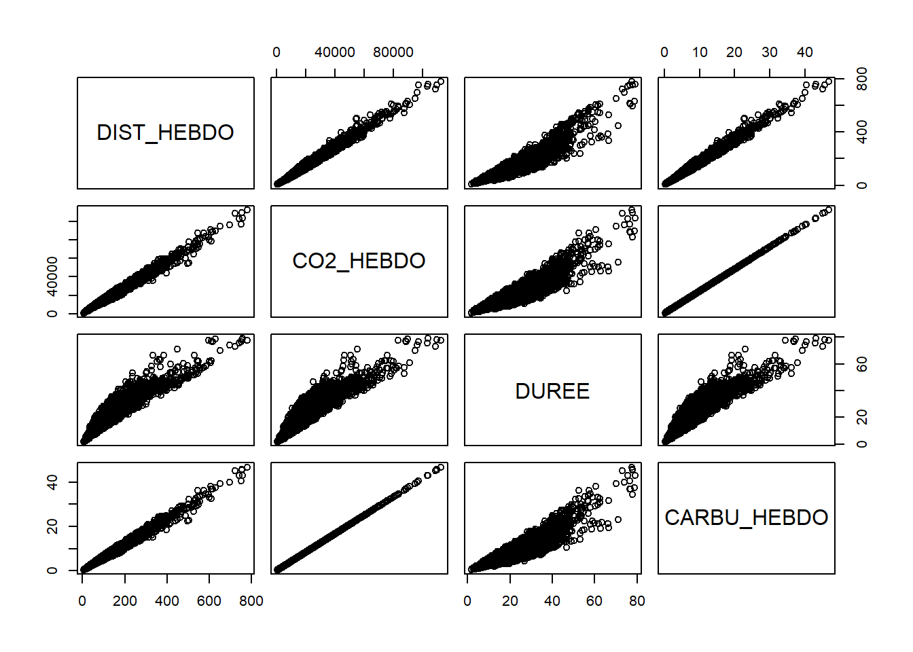
On voit que si CARBU et HEBDO sont totalement liées, distance et durée vers les valeurs hautes sont plus diversifiées
On sélectionne les individus à la durée la plus longue
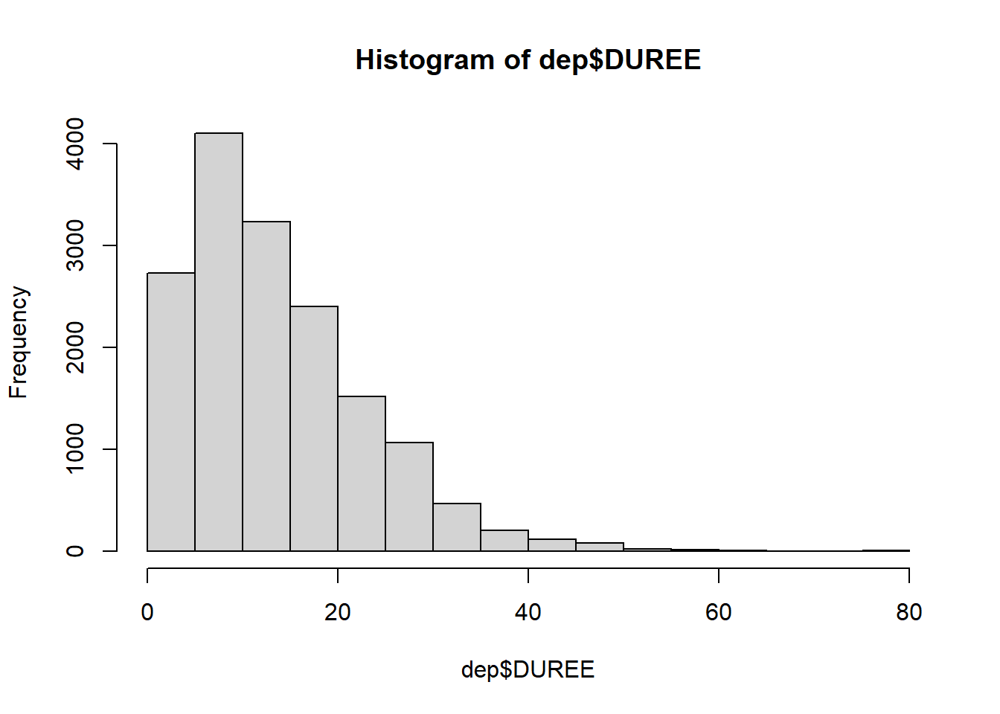
L’ACP est normée car les unités sont différentes
res <- prcomp(dep, scale. = T)
biplot(res, main= "Résultat d'une ACP normée", col= c("black", "chartreuse"), cex = 0.5)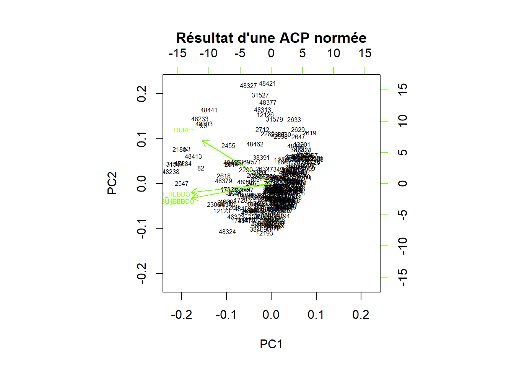
Il y a beaucoup d’individus qui sont loin des axes. Il faut examiner leur caractéristiques.
## DIST_HEBDO CO2_HEBDO DUREE CARBU_HEBDO id
## 48324 544.2194 87274.17 52.49604 36.21335 48324
## 48327 447.2211 55413.33 70.98574 22.99308 48327
## 48421 331.6676 46284.41 66.56000 19.20515 48421On peut voit donc avec ces 3 cas que pour une durée similaire, les consommations de carburant et l’émission de CO2 vont du simple au double. Cela dépend du moyen de transport utilisé, à noter également que la distance est plus faible pour celui qui doit utiliser un transport en commun.
L5GEABIM Analyses bivariées et multivariées